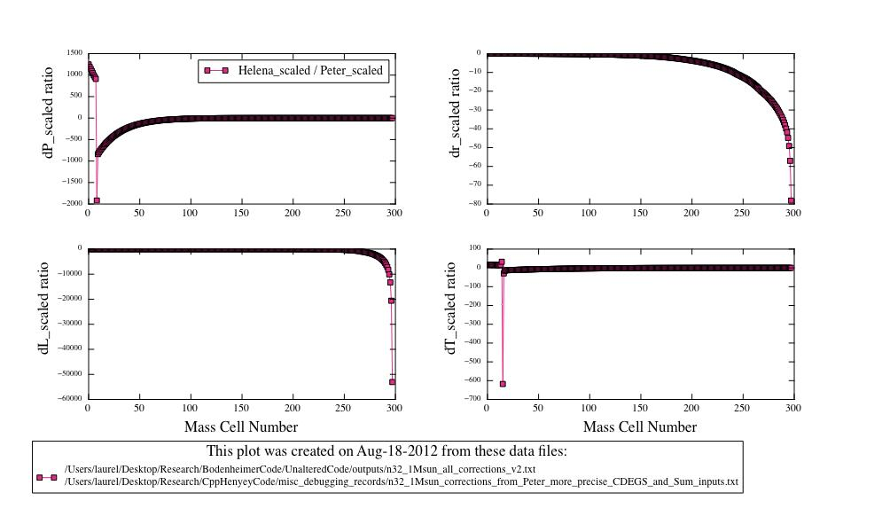
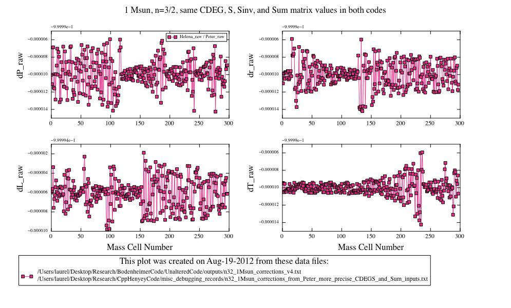
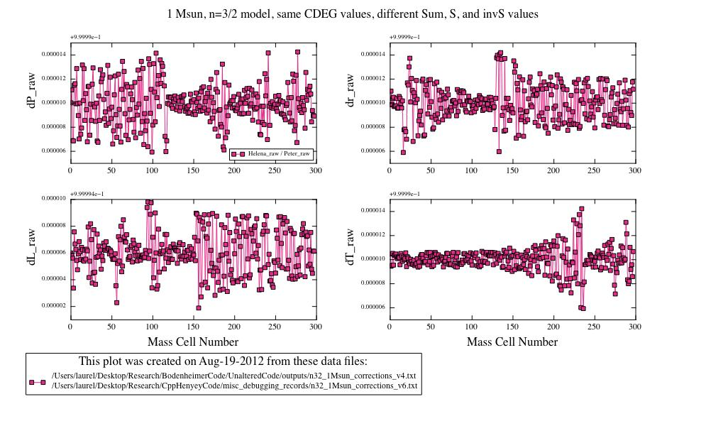
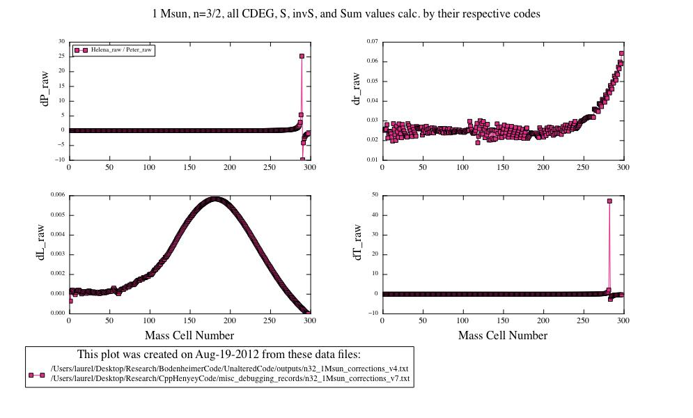

Date & Time: Aug. 19, 2012
Location: campus
Computing context: MachoMac
(/Desktop/Research/CppHenyeyCode/src, /Desktop/Research/BodenheimerCode/UnalteredCode)
From last time:
Hints from Greg: Numerical recipes, ill-conditioned matrices (NR apparently has info on how to finess those), "pre-conditioning" a matrix, singular value decomposition?? (may only be worth it for matrices larger than 4x4, but worth keeping in mind)

Comparison of Helena and Peter's scaled dX outputs,
given the same CDEG, S, S^-1, and Sum matrix values. In this run,
the "cf" scaling factor in Peter's code has been set to
1.0, which effectively turns off dX value rescaling. Notice that
the dX values calculated by the two codes still differ
substantially in places. Need to figure out what's causing that to
happen.
Figure
1:
To Do Today:
Notice that the dX values calculated by the two codes still differ substantially in places (see Figure 1). Need to figure out what's causing that to happen.
Compare the A2 and A3 values at the outermost
mass cell (these should equal the dr and dL values at that point)
between the two codes.
Done. All A values are the same (to within a
few parts in 10^-5) b/w the two codes, over the entire mass cell
range.
Maybe Peter's code is rescaling the dX values
in some way that's causing the discrepancies in Figure 1?
The dX values themselves DO agree between the
codes. The way I was plotting the dX ratios in python was causing
the problem. Peter's dX values are printed from the outside in,
while Helena's dX values were printed from the inside out (in terms
of mass cell number).
Fixed this by modifying my python script to always sort the data by mass cell number in increasing order before plotting any comparisons. See results in Figure 2.

Figure
2
Now that's cleared up, I'm going to see how the results compare when I *don't* load Peter's Sum matrix values into Helena, but let it compute those Sum values itself.
Results saved in: /misc_debugging_records/n32_1Msun_corrections_v5.txt
Outcome: excellent agreement between the codes. (See Figure 3 for results).
Figure
3
Next, compare the two codes' results when I let
Helena compute its own Sum *and* S values (but not S^-1).
Actually, the Sum matrices aren't involved in the Henyey matrix
inversion/soln. subroutine, except where they're used to find S^-1,
so this check isn't necessary.
Next, compare the two codes' results when I let Helena calculate S^-1 values, but not CDEG values. (for the 1Msun, n=3/2 model).
Results saved in: /misc_debugging_records/n32_1Msun_corrections_v6.txt
Outcome: excellent agreement between the codes. (See Figure 4).

Figure
4
Next, let Helena calculate its own CDEG values, in addition to the Sum, S, and S^-1 matrix values. (Keep the primary and lookup var values set to those determined by Peter's code, though.)
Results saved in: /misc_debugging_records/n32_1Msun_corrections_v7.txt
Outcome: They disagree. See Figure 5 for details.

Figure
5
So, it looks like the limiting factor in getting the codes dX values to agree lies NOT with the S matrices or their inversions, but with the CDEG values that Helena is calculating.
Next steps:
Try to isolate which, if any, of the CDEG matrices are most responsible for this.
Use Peter-generated values for all but one, and see how that effects the dX values' agreement b/w codes.
For the 1 Mjup model: do the Peter and Helena models' dX values (raw) now agree, too?
To keep in mind for later:
Look at the comparison between Peter's and Helena's S^-1 values.
Find the mass cell numbers where the differences are largest
Print out Helena's (and Peter's?) S matrices at those locations
See what the dynamic range of values in those matrices is/are (figure out if that's what's causing the differences between the two codes' results)
If the difference is due to the ill-conditioned-ness of the S matrices, go on the the step below.
Test both Helena's matrix inversion algorithms (MIAs) on matrices with varying dynamic ranges, to see where they start to break down.
See if Peter's [S | x] --> [S | S^-1 * x] method (which I'm 80% but not 100% sure is what that GIRL subroutine of his is doing) truly is more numerically stable with these ill-conditioned-ish matrices.
If so, implement it in my code. Or perhaps, test its robustness by implementing it in my code and seeing if that'll make Helena and Peter's code produce the same correction values.